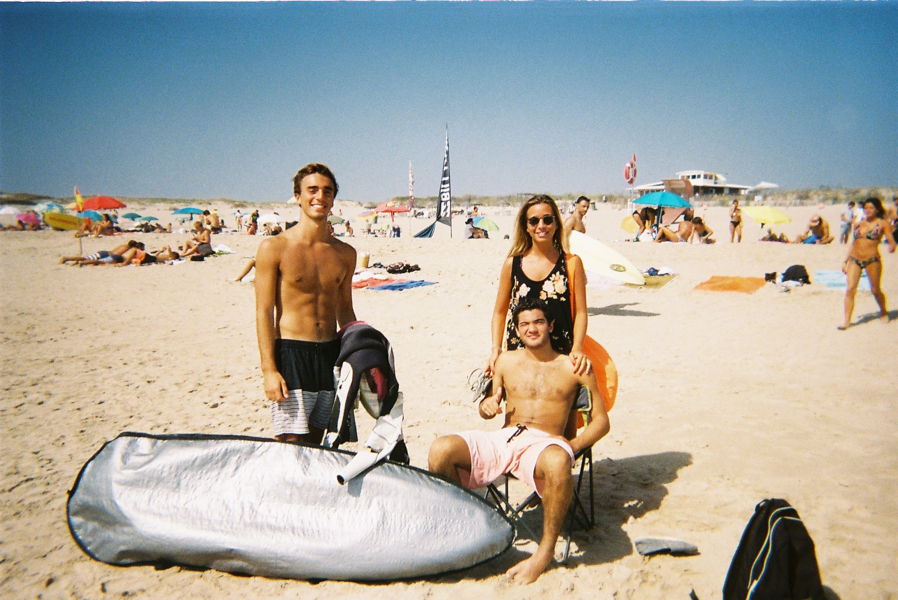

>

Costumo fotografar os meus amigos regularmente. Gosto de me relembrar de dias banais passados com eles em que tanto me rio e me divirto. A grande parte dos meus amigos que surgem nesta secção, são pessoas que conheço desde os meus 3 anos. Foi com eles com quem cresci e foram eles que fizeram de mim, aquilo que sou hoje!